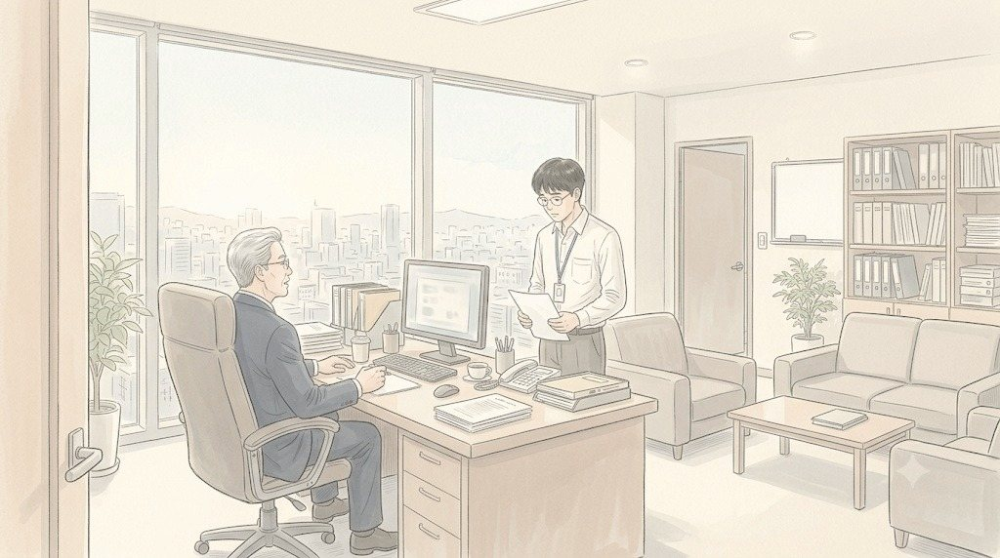
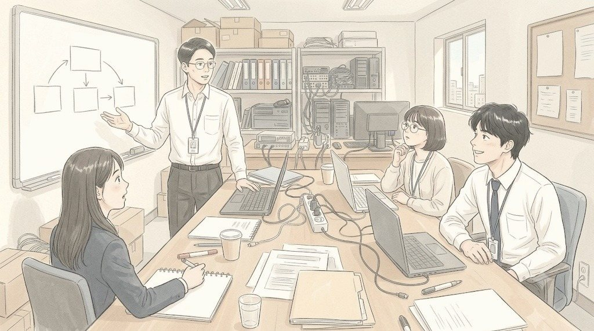
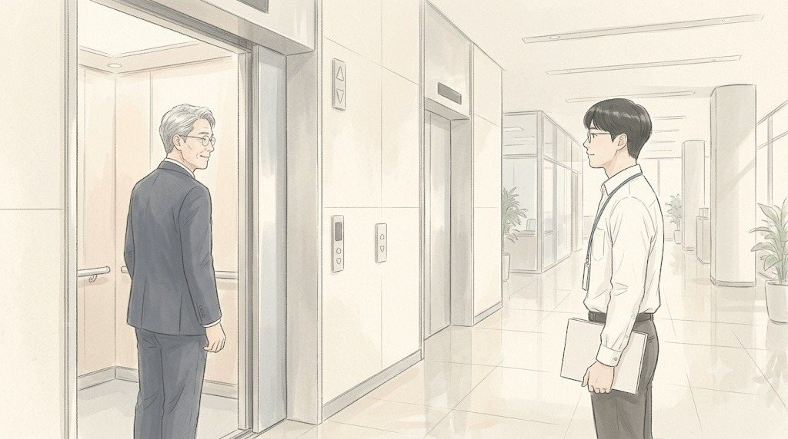

목요일 새벽 2시 14분. 한지석의 노트북 화면 왼쪽 위에 파일 이름이 떠 있었다.
'토요일 보고_신흥시장 현황_v12.pptx'
열두 번째 버전이었다.
문혜경 사장이 지난 토요일에 던진 질문은 하나였다. 북미와 유럽은 좋은데, 동남아와 중남미는 왜 안 되는가. 해외사업팀이 준 자료는 여섯 장이었고, 그중 네 장이 환율과 거래선 사정이었다. 한지석은 그 여섯 장을 서른 장으로 늘렸다가, 다시 열두 장으로 줄였다가, 지금은 열여덟 장이었다.
v1부터 v11까지는 바탕화면 폴더에 쌓여 있었다. 버전마다 결론 문장이 달랐다.
v3 - '신흥 시장 부진은 구조적 요인에 기인함.'
v7 - '현지 유통 구조 이해 부족이 핵심 원인.'
v11 - '본사의 일방적 마케팅 지침이 현지 실행력을 저해.'
v11을 쓰고 나서 그는 한참 화면을 노려봤다. 그 문장은 해외사업팀을 정면으로 겨누고 있었다. 맞는 말이었다. 하지만 맞는 말이라고 다 쓸 수 있는 건 아니었다.
파티션 너머에서 의자 삐걱이는 소리가 났다. 한지석은 고개를 들었다. 이우진이었다.
"너 아직 안 갔어?"
"파트장님이 안 가셔서요."
"가. 내일 아침에 회의 세팅해야 하잖아."
"내일은 목요일이에요, 파트장님."
한지석은 시계를 봤다. 맞았다. 목요일이었다. 토요일까지 이틀이 남아 있었다. 그는 손바닥으로 눈을 눌렀다.
이우진이 파티션을 돌아 그의 자리로 왔다. 화면의 v12를 봤다.
"파트장님, 그거 몇 번째예요?"
"열두 번째."
"저희한테는 한 번도 안 보여 주셨어요."
한지석은 대답하지 않았다. 이우진은 조금 망설이다가 말을 이었다.
"파트장님. 저희도 쓸 수 있습니다."
"알아."
"아시는데 왜 혼자 쓰세요?"
질문은 조용했지만 정확했다. 한지석은 손을 키보드에서 내렸다. 왜 혼자 쓰는가. 그는 그 질문에 대한 대답을 알고 있었다. 다만 입 밖으로 꺼내 본 적이 없었다.
"틀리면 내가 혼나는 게 낫잖아."
"그럼 저희는 언제 혼나 봐요?"
한지석은 이우진을 봤다. 서른여섯 살. 입사 9년차. 회의록은 완벽하게 쓰지만, 보고서의 결론 문장은 한 번도 써 본 적이 없는 후배. 그게 누구 탓인지 한지석은 알았다.
"...퇴근해. 내일 아침에 얘기하자."
이우진은 고개를 숙이고 돌아갔다. 한지석은 다시 화면을 봤다. 결론 칸이 비어 있었다.
목요일 오전 9시. 상무실.
권재혁은 출력본을 넘기지 않았다. 표지만 보고 내려놓았다.
"v12라고 쓰여 있네요."
"파일 이름이 그대로 인쇄됐습니다. 죄송합니다."
"죄송할 건 아니고. 열두 번 고치는 동안 누구한테 보여 줬어요?"
"...아무한테도요."
권재혁은 의자를 돌려 창밖을 봤다.
"한 차장. 내가 홍콩에 있을 때 상사가 영국 사람이었어요. 그 사람이 나한테 처음 준 숙제가 뭐였는지 알아요?"

"모르겠습니다."
"보고서 하나를 후배 셋한테 나눠 주고, 나는 손대지 말라는 거였어요. 결과물이 내가 쓴 것보다 70% 수준이어도 그대로 올리라고."
"왜요?"
"내가 100%를 쓰는 동안, 후배 셋은 0%를 배우니까. 그 사람 말로는, 그게 내가 승진 못 하는 이유였어요."
한지석은 아무 말도 하지 못했다.
"이번 보고서, 셋으로 나눠요. 숫자는 최윤아, 현장 사례는 이우진, 경쟁사는 나서현. 한 차장은 결론 한 줄만 써요. 그리고 고치지 마요. 80%면 올려요."
"사장님 앞에 80%를 올리라는 말씀이세요?"
"사장님은 100%를 원하는 게 아니에요. 다음 주에도 100%를 가져올 수 있는 팀을 원하는 거예요. 한 차장 혼자서는 그게 안 돼요. 한 차장은 쓰러지니까."
권재혁이 의자를 다시 돌렸다.
"그리고 그 v11. 해외사업팀 탓하는 문장. 그건 빼요. 맞는 말이어도."
"보셨어요?"
"새벽 3시에 공유 폴더에 올렸잖아요. 나도 안 자고 있었어요."
목요일 오후 2시. 파트 회의실.
한지석은 화이트보드 앞에 섰다. 최윤아, 이우진, 나서현이 앉아 있었다. 셋 다 노트북을 열지 않고 그를 보고 있었다. 이런 회의는 처음이었다.
"토요일 신흥 시장 보고서, 셋이 나눠서 써요."
나서현이 눈을 깜빡였다. 최윤아는 표정이 없었다. 이우진만 아주 조금 웃었다.
"윤아 과장은 숫자. 인도네시아랑 멕시코 매출, 유입, 이탈, 객단가. 경쟁사랑 비교해서."
"네."
"우진이는 현장. 해외 법인에서 올라온 메일, 고객 문의, 리뷰. 숫자 말고 사람 목소리."
"네."
"서현 씨는 소다랩이랑 민트앤이 그 나라에서 어떻게 파는지. 라이브 방송, 인플루언서, 가격."
"저도 써요?"
"써요. 서현 씨 장표는 서현 씨 이름으로 올라가요."
나서현이 입을 다물었다. 그리고 수첩에 무언가를 크게 적었다.

"내일 오후 5시까지 각자 보내 줘요. 나는 결론 한 줄만 씁니다. 그리고..."
한지석은 잠깐 숨을 골랐다.
"고치지 않을게요. 80%면 올려요."
최윤아가 처음으로 고개를 들었다.
"파트장님, 진짜요?"
"진짜요."
"그럼 저 숫자 다 넣어도 돼요? 지난번처럼 세 개만 고르라고 안 하시고요?"
한지석은 웃었다. 그는 늘 최윤아의 숫자를 세 개로 줄였다. 사장님은 숫자 많은 걸 싫어한다고. 사실 숫자를 싫어한 건 그 자신이었을지도 몰랐다.
"다섯 개까지."
"일곱 개."
"여섯 개."
"...좋아요."
금요일 오후 5시 2분. 한지석의 메일함에 파일 세 개가 들어왔다.
최윤아의 장표는 숫자가 여섯 개였다. 정확히 여섯 개. 이우진의 장표에는 멕시코 법인 카를로스 멘도사의 메일 한 줄이 크게 인용되어 있었다. 나서현의 장표는 디자인이 달랐다. 파트 템플릿을 쓰지 않았다.
한지석은 손이 근질거렸다. 나서현 장표의 글자 크기를 맞추고 싶었다. 이우진의 인용문 출처 표기를 바꾸고 싶었다. 최윤아의 그래프 색을 바꾸고 싶었다.
그는 마우스에서 손을 뗐다. 그리고 빈 첫 장에 결론 한 줄만 썼다.
'신흥 시장의 문제는 가격이 아니라, 고객이 사는 방식을 우리가 모른다는 것입니다.'
파일 이름은 v1이었다.
토요일 오전 8시. 대회의실.
문혜경은 장표를 넘기다가 나서현의 장에서 멈췄다.
"이 장만 디자인이 다르네요."
회의실의 공기가 살짝 굳었다. 한지석이 입을 열려는 순간, 문혜경이 먼저 말했다.
"이 장이 제일 읽기 쉬워요. 다음부터 이 형식으로 통일해요."
나서현의 얼굴이 빨개졌다.
회의가 끝난 뒤, 권재혁이 엘리베이터 앞에서 한지석을 불러 세웠다.
"한 차장. 그 보고서 몇 퍼센트였어요?"
"제 기준으로는 70%요."
"사장님 기준으로는?"
한지석은 대답하지 못했다. 권재혁이 엘리베이터에 타며 말했다.
"나도 모르겠어요. 근데 오늘 사장님이 빨간 볼펜을 세 번밖에 안 들었어요. 지난주는 열한 번."

문이 닫혔다. 한지석은 그 자리에 한참 서 있었다.
그날 밤, 바탕화면의 v1부터 v12까지가 든 폴더를 그는 지우지 않았다. 대신 폴더 이름을 바꿨다.
'혼자 쓴 것들.'
(EP16 끝)